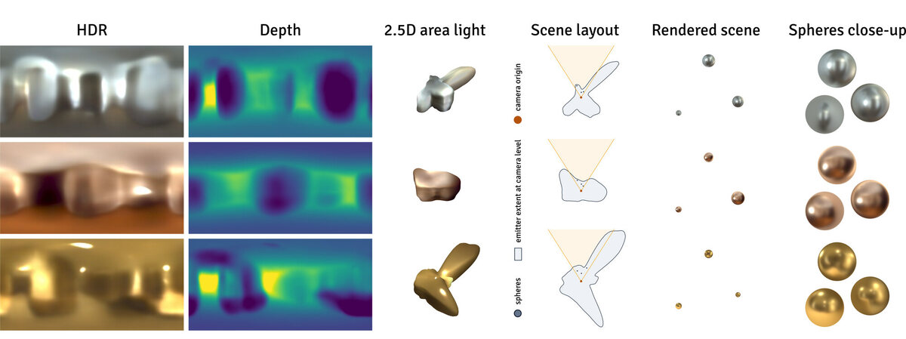
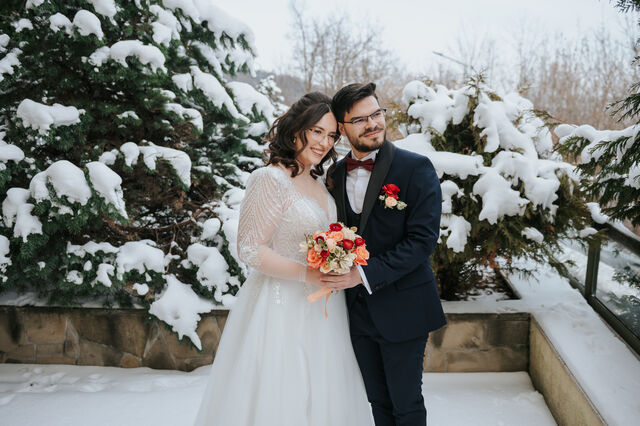
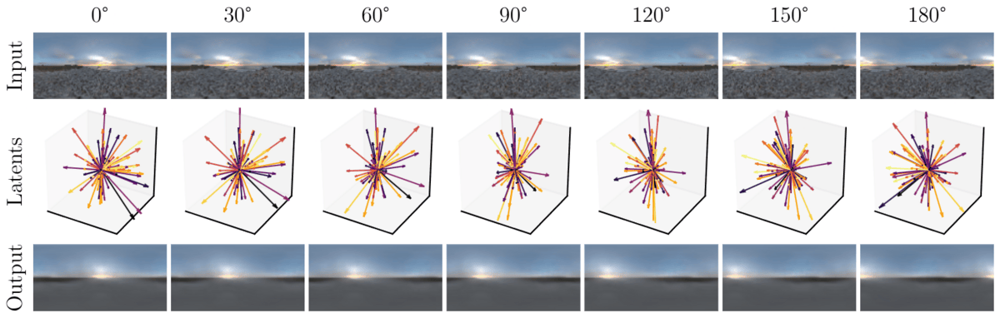
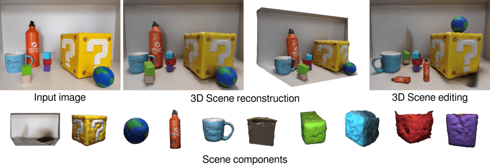
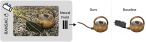
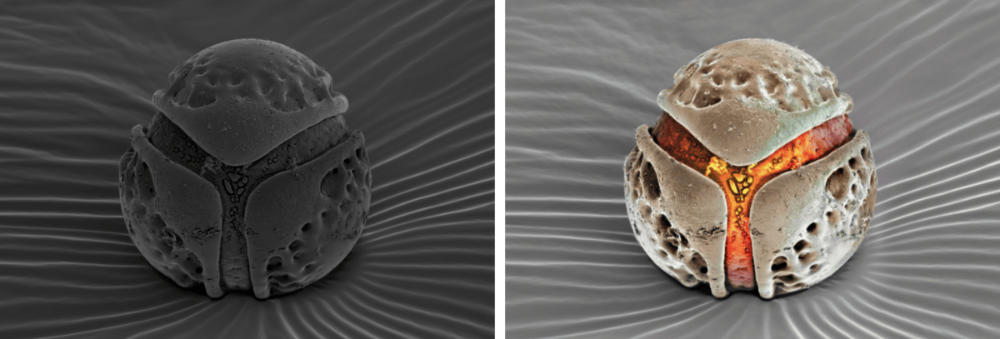
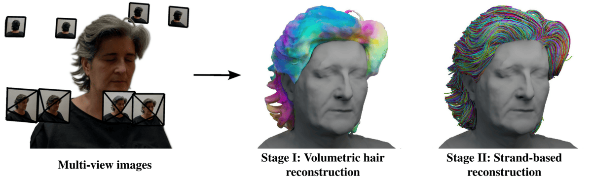
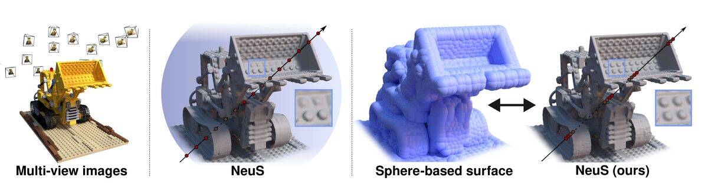

RoomLight: A 2.5D Illumination Prior for Indoor Environments
arXiv 2026 Preprint

PhD Candidate · Visual Computing Erlangen, FAU
My research focuses on neural scene representations and 3D reconstruction from limited or unreliable observations, such as a single image or inconsistent multi-view captures, and on learning shape and illumination priors that make this possible.
I am a researcher in the Cognitive Computer Vision Lab at FAU Erlangen-Nürnberg, advised by Prof. Dr. Bernhard Egger. Along the way, I completed a six-month research internship at Meta Reality Labs in Zurich. Before joining FAU, I interned at Samsung AI Center and obtained my M.Sc. in Data Science from Skoltech.

arXiv 2026 Preprint

CVPR 2026 Conference on Computer Vision and Pattern Recognition

3DV 2025 International Conference on 3D Vision

ECCV 2024 European Conference on Computer Vision

ECCVW 2024 AI for Visual Arts Workshop

ICCV 2023 International Conference on Computer Vision

CVPR 2023 Conference on Computer Vision and Pattern Recognition